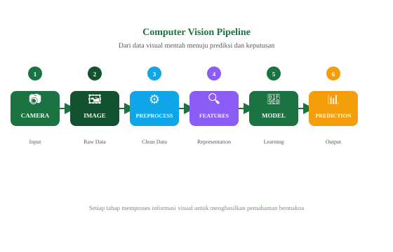
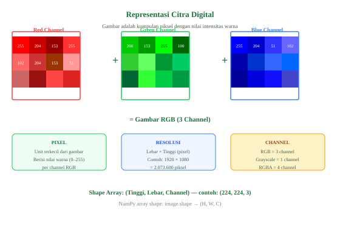

Introduction to Computer Vision
Memahami konsep dasar Computer Vision, cara komputer "melihat" dunia, dan pipeline lengkap dari piksel hingga prediksi.
1. Apa itu Computer Vision?
Computer Vision (CV) adalah sub-bidang kecerdasan buatan (AI) yang memungkinkan komputer untuk menginterpretasikan dan memahami konten visual dari dunia nyata — seperti gambar dan video — layaknya cara manusia melihat dan memproses informasi visual.
Computer Vision = AI yang memberi kemampuan melihat pada mesin, mengubah piksel menjadi pemahaman bermakna.
Perbedaan CV dengan Image Processing
| Aspek | Image Processing | Computer Vision |
|---|---|---|
| Tujuan | Mengolah/memanipulasi gambar | Memahami isi gambar |
| Output | Gambar yang sudah diproses | Label, koordinat, teks, keputusan |
| Contoh | Blur, sharpen, resize, rotate | Deteksi wajah, klasifikasi objek |
| Pendekatan | Matematika sinyal | Machine learning / deep learning |
2. Computer Vision Pipeline
Setiap sistem CV melewati tahapan berikut, dari data mentah hingga keputusan akhir:

Sumber data visual — kamera real-time, file gambar (JPEG/PNG), atau frame video.
Gambar mentah berupa array angka 0–255 per piksel, belum dinormalisasi.
Resize, normalisasi, augmentasi, konversi warna — menyiapkan data untuk model.
Model mengekstrak fitur penting — tepi, tekstur, bentuk, pola — dari gambar.
Jaringan saraf tiruan memproses fitur dan belajar membuat prediksi.
Hasil akhir: label kelas, kotak bounding box, segmentasi mask, atau teks deskripsi.
3. Cara Komputer "Melihat" Gambar
Komputer tidak melihat gambar seperti manusia. Bagi komputer, sebuah foto hanyalah array (matriks) angka — setiap elemen menyimpan intensitas warna satu piksel.

Komponen Gambar Digital
- Piksel: Unit terkecil gambar. Setiap piksel memiliki nilai 0–255 (grayscale) atau tiga nilai RGB.
- Channel: Lapisan warna. RGB = 3 channel (Red, Green, Blue). Grayscale = 1 channel.
- Shape: Dimensi array gambar dinyatakan sebagai
(H, W, C)— Tinggi × Lebar × Channel. - Resolusi: Lebar × Tinggi dalam piksel. Gambar 1920×1080 = lebih dari 2 juta piksel.
import numpy as np
from PIL import Image
# Buka gambar
img = Image.open("foto.jpg")
arr = np.array(img)
print(f"Shape : {arr.shape}") # (H, W, C) misal (480, 640, 3)
print(f"Dtype : {arr.dtype}") # uint8
print(f"Min : {arr.min()}") # 0
print(f"Max : {arr.max()}") # 255
# Akses piksel pada baris 100, kolom 200
piksel = arr[100, 200] # array([R, G, B])
print(f"Piksel : {piksel}")
# Pisahkan channel
R = arr[:, :, 0] # channel merah
G = arr[:, :, 1] # channel hijau
B = arr[:, :, 2] # channel biru
4. Task Utama Computer Vision
Image Classification
Memberi label pada seluruh gambar. Contoh: "Ini gambar kucing"
Object Detection
Mendeteksi dan melokalisasi objek dengan bounding box. Contoh: YOLO, SSD
Segmentation
Mengelompokkan setiap piksel ke kelas tertentu. Semantic / Instance / Panoptic
Face Recognition
Identifikasi dan verifikasi wajah dalam gambar atau video secara real-time.
Image Generation
Membuat gambar baru dari teks atau gambar referensi menggunakan GAN/Diffusion.
OCR / Doc AI
Membaca teks dari gambar atau dokumen — tanda, formulir, KTP, struk.
5. Aplikasi Nyata Computer Vision
Analisis foto rontgen, MRI, deteksi kanker kulit, identifikasi retinopati diabetik.
Deteksi rambu lalu lintas, pejalan kaki, kendaraan lain, dan penanda jalan.
Quality control otomatis — deteksi cacat produk di lini produksi.
Visual search, pengenalan produk, checkout tanpa kasir (Amazon Go).
CCTV pintar, pengenalan wajah di bandara, deteksi intrusi.
Deteksi penyakit tanaman dari foto daun, drone pengawas lahan.
6. Sejarah Singkat Computer Vision
📌 Rangkuman Materi 01
- Computer Vision memungkinkan komputer memahami konten visual seperti gambar dan video.
- Gambar digital adalah array angka — piksel dengan nilai 0–255 per channel RGB.
- Pipeline CV: Input → Preprocessing → Feature Extraction → Model → Prediction.
- Task utama: klasifikasi, deteksi, segmentasi, pengenalan wajah, generasi gambar.
- Revolusi CV dimulai oleh AlexNet (2012) dan terus berkembang hingga ViT dan multimodal AI.